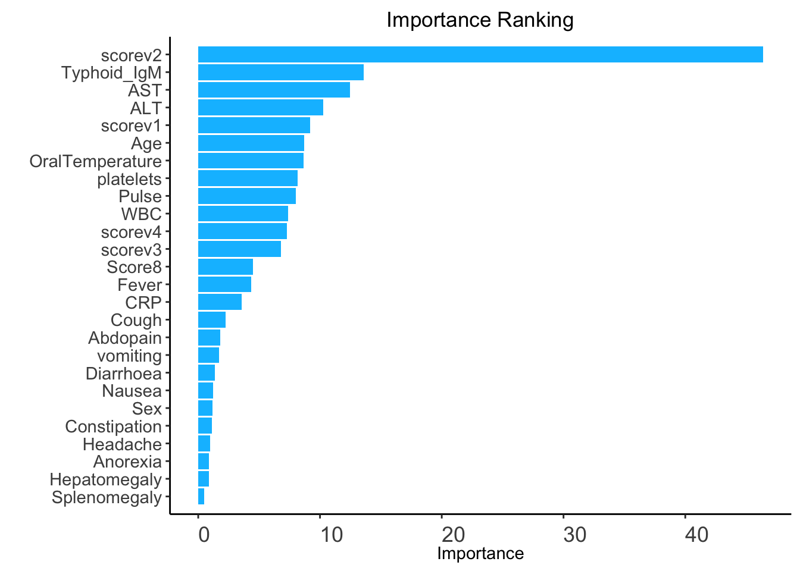
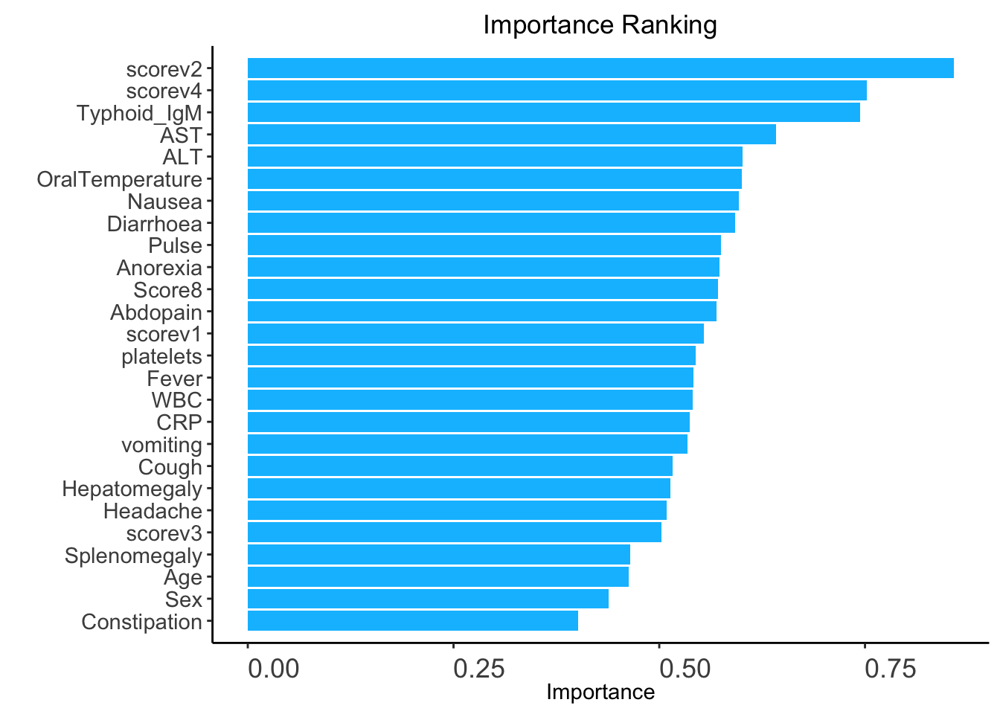
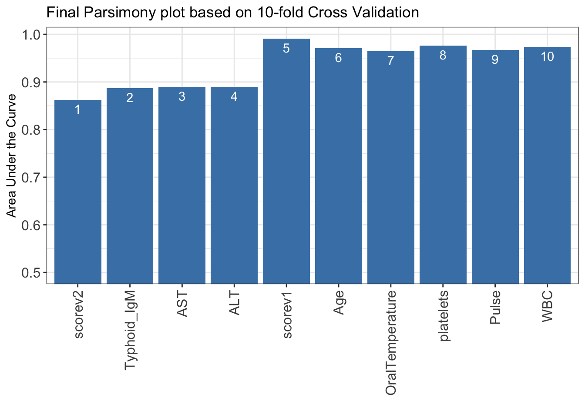
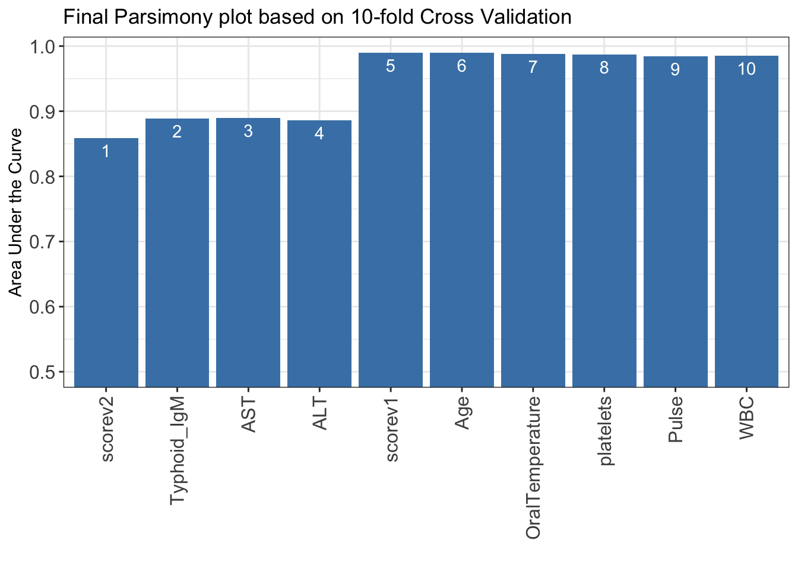

required_packages <- c("dplyr", "AutoScore")Generating a clinical score
Packages
required packages:
Making sure that needed packages are installed:
to_inst <- required_packages[! required_packages %in% installed.packages()[,"Package"]]
if (length(to_inst)) install.packages(to_inst)Loading some of these packages:
library(dplyr)
library(AutoScore)Loading the data
nepal <- readRDS("nepal.rds")Feature engineering
Nepal data set:
nepal2 <- nepal |>
mutate(across(c(Cough, Diarrhoea, vomiting, Abdopain, Constipation, Headache,
Anorexia, Nausea, Typhoid_IgM), ~ .x > 0),
across(where(is.character), as.factor)) |>
rename(label = BloodCSResult,
CRP = `CRP_mg/L`) |>
na.exclude()Checking the data:
check_data(nepal2)Data type check passed. No NA in data. Spliting the data
out_split <- split_data(nepal2, c(0.7, 0.1, 0.2), strat_by_label = FALSE)
train_set <- out_split$train_set
validation_set <- out_split$validation_set
test_set <- out_split$test_setStep 1: generate variable ranking list
ranking_rf <- AutoScore_rank(train_set, method = "rf", ntree = 100)The ranking based on variable importance was shown below for each variable:
scorev2 Typhoid_IgM AST ALT scorev1
46.3881981 13.6127198 12.4644660 10.2808459 9.2032136
Age OralTemperature platelets Pulse WBC
8.6909896 8.6303577 8.1657438 8.0400057 7.4018626
scorev4 scorev3 Score8 Fever CRP
7.2659499 6.7919239 4.4919664 4.3316935 3.5711127
Cough Abdopain vomiting Diarrhoea Nausea
2.2500429 1.8258187 1.7283499 1.3663493 1.1985561
Sex Constipation Headache Anorexia Hepatomegaly
1.1906656 1.1135503 0.9610440 0.8883028 0.8792704
Splenomegaly
0.5000444 
ranking_auc <- AutoScore_rank(train_set, validation_set, "auc")The auc-based ranking based on variable importance was shown below for each variable:
scorev2 scorev4 Typhoid_IgM AST ALT
0.8579365 0.7523810 0.7436508 0.6420635 0.6007937
OralTemperature Nausea Diarrhoea Pulse Anorexia
0.6000000 0.5968254 0.5920635 0.5753968 0.5730159
Score8 Abdopain scorev1 platelets Fever
0.5714286 0.5698413 0.5539683 0.5444444 0.5412698
WBC CRP vomiting Cough Hepatomegaly
0.5404762 0.5373016 0.5341270 0.5166667 0.5134921
Headache scorev3 Splenomegaly Age Sex
0.5087302 0.5023810 0.4642857 0.4626984 0.4380952
Constipation
0.4015873 
Step 2: select variables with parsimony plot
AutoScore_parsimony2 <- function(...) {
AutoScore_parsimony(train_set, validation_set, n_max = 10,
cross_validation = TRUE, ...)
}AutoScore_parsimony2qtl <- function(rank, quantiles, ...) {
AutoScore_parsimony2(rank = rank,
categorize = "quantile", quantiles = quantiles, ...)
}AutoScore_parsimony2kms <- function(rank, max_cluster, ...) {
AutoScore_parsimony2(rank = rank,
categorize = "k_means", max_cluster = max_cluster, ...)
}AUC_rf_qtl <- AutoScore_parsimony2qtl(ranking_rf, c(0, 0.05, 0.2, 0.8, 0.95, 1))***list of final mean AUC values through cross-validation are shown below
auc_set.sum
1 0.8625921
2 0.8867992
3 0.8895731
4 0.8897945
5 0.9911566
6 0.9709387
7 0.9641878
8 0.9761712
9 0.9669552
10 0.9736781
AUC_rf_kms <- AutoScore_parsimony2kms(ranking_rf, 2)***list of final mean AUC values through cross-validation are shown below
auc_set.sum
1 0.8586091
2 0.8884738
3 0.8893445
4 0.8861516
5 0.9897843
6 0.9900174
7 0.9881992
8 0.9874801
9 0.9843259
10 0.9850738